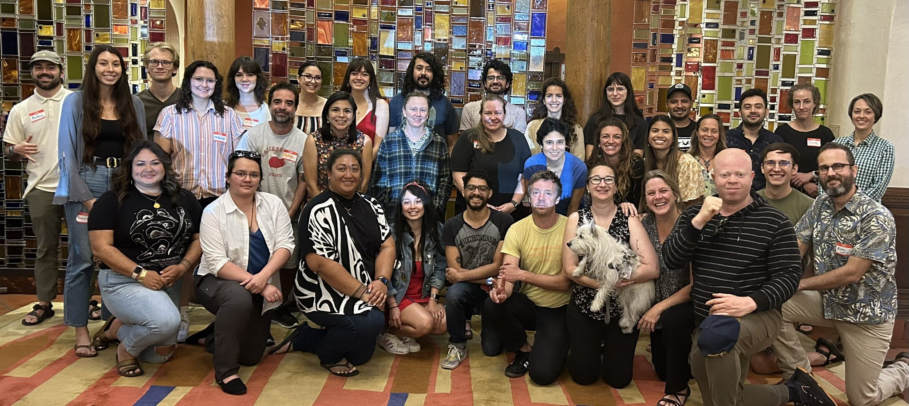

process-models-workshop
1 Introduction
1.1 Notes for asychronous use
These are the materials for the second 2 days of the “Multidimensional Biodiversity Data” workshop first offered in Albequerque, NM in June 2023 by the RoLE Model team. For the first two days’ materials, see the course website here.
To work through these materials asynchronously, you will need some software packages installed on your computer. We have provided a Docker image with the necessary packages already set up. To get going with this, see the setup instructions.
The first days’ materials (from “Theory/conceptual motivation for process models” through to “Intro to machine learning inference with neutral simulations”) are also available as video lectures on YouTube:
1.2 Workshop outline
| Time | Day 1 | Day 2 |
|---|---|---|
| 9-9:30 | Review of part I and follow-up questions | Review of previous days topics (Discuss dreamed of ideas) |
| 9:30-10:30 | Finding multidimensional biodiversity data and and Theory/conceptual motivation for process models | Intro to the MESS model & Getting started with MESS simulations |
| 10:30-10:45 | Coffee Break | Coffee Break (Group photo) |
| 10:45-12 | Coding exercise: A simple neutral model of biodiversity | Simulation exercise: Using MESS API mode in RStudio to develop and test theoretical intuition |
| 12-1 | Lunch Break | Lunch Break |
| 1-2:30 | Simulation Exercise: Exploring neutral model behavior | Simulation based machine learning inference (Classification) |
| 2:30-2:45 | Coffee Break | Coffee Break |
| 2:45-4:00 | Intro to machine learning inference with neutral simulations | Simulation based machine learning inference (Regression), small group discussions about empirical applications & Wrap-up |
1.3 Group Photo

1.4 Funding acknowledgements
We gratefully acknowledge funding support from NSF awards DBI-2208901 to Renata Diaz and DBI-2104147 to the RoLE model team.